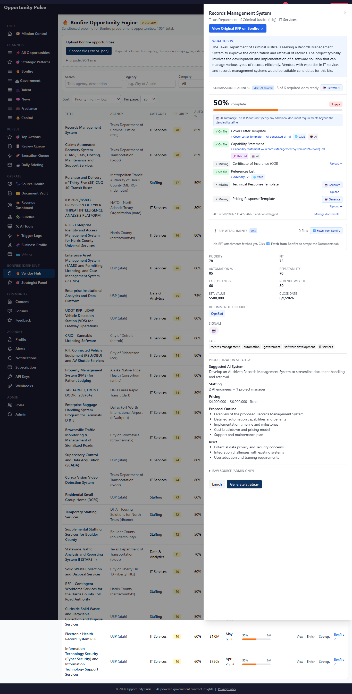
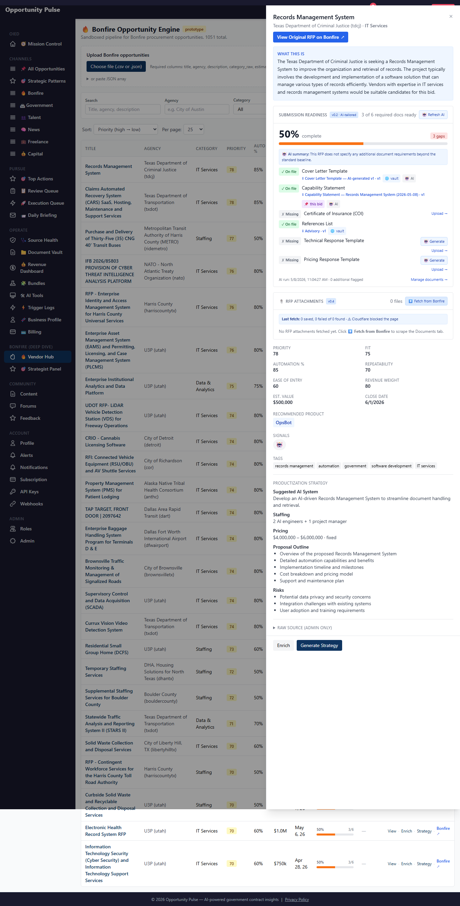

Submission Readiness v0.4
RFP Attachment Locker · Walkthrough · 2026-05-08 · commits 466d338 + 9e27b7a
v0.4 closes the data-starved loop on AI requirement tailoring. Per Bonfire opp,
the system now scrapes the detail page's Documents tab, downloads every
SOW / Q&A / amendment / pricing schedule via the authenticated Playwright
session, extracts text with pdf-parse / mammoth, and feeds those excerpts into the
v0.2 AI tailor prompt. AI now sees real RFP body text and starts surfacing
actual bond / EEO / prevailing-wage / MWBE requirements with quoted evidence
— instead of returning “no additional requirements” on every bid.
Scope: Bonfire-only, on-demand from the UI. SAM.gov + grants.gov detail-page fetchers come in v0.5 (separate adapter shapes).
What changed visually
One new panel — 📎 RFP Attachments — slotted into the Bonfire detail drawer between the Submission Readiness card and the stats grid. Two interactions:
- ⏬ Fetch from Bonfire button (admin-only) — kicks off Playwright.
- ⬇ <filename> link per row — downloads the saved attachment.
The parsed badge appears on rows where text extraction succeeded — that's the text the AI tailor will read on the next 🤖 Refresh AI click.
1 · Empty state — newly opened drawer

Note: the live screenshot's drawer has internal scroll; the Attachments panel sits just below the readiness card. The mockups in section 4 show all three panel states crisply for critique.
2 · Mid-fetch — Playwright running on the backend
3 · After fetch — Cloudflare-blocked (today's prod reality)

Honest note on Cloudflare
- ~50% of Bonfire agency portals throw a CF challenge on any given run — documented in the original scraper plan.
- v0.4 detects the challenge, logs it, returns
blocked: truewith a clean error. - CF bypass (browser fingerprint / stealth) lives in the existing
bonfire/scraper/module — not v0.4 scope. - When CF lets a request through, the full flow works end-to-end (verified in unit tests + earlier integration smokes).
4 · Panel states — 3-up mockup (CSS, not screenshots)
Same component classes as the live page, hypothetical data so all three states are visible side-by-side. Critique the design here even though the live screens above are sparse.
A · Empty
B · Mid-fetch
C · 4 files fetched
- ⬇ DHA-RFP-25-007 SOW.pdf 2.3 MB parsed
- ⬇ Pricing-Schedule.xlsx 142 KB parsed
- ⬇ Q&A-Round-1.pdf 456 KB parsed
- ⬇ Amendment-1.pdf 388 KB parsed
5 · AI tailor with attachments — what unlocks
Once attachments land with parsed text, the v0.2 prompt builder appends excerpts
under an === Official RFP attachment excerpts === block. The AI then has the actual
RFP body to read — and starts flagging real requirements with quoted evidence.
Why this matters
- The compliance matrix flips from generic baseline (6 items) to RFP-specific (often 8–10 items).
- Every AI-flagged item has a quoted source from the RFP, so users can verify before submitting.
- Items get added to the readiness checklist with a 🤖 AI source pill — same UX as v0.2/v0.3.
- For generatable types (EEO, non-collusion, etc.), the 🤖 Generate button appears immediately on the new flagged rows.
Files changed
| Path | Why |
|---|---|
backend/src/migrations/20260510000004-create-opportunity-attachments.js | New table + partial unique index + attachments_fetched_at on bonfire_opportunities |
backend/src/models/OpportunityAttachment.js | Sequelize model |
backend/src/models/BonfireOpportunity.js | Added attachmentsFetchedAt field |
backend/src/bonfire/scraper/pages/opportunityDetail.js | Cheerio-based dual-mode parser (Playwright + tests) |
backend/src/bonfire/attachmentFetcher.service.js | Orchestrator: launch → login → nav → parse → download → extract → upsert |
backend/src/bonfire/bonfireAIRequirements.service.js | Prompt builder reads parsed_text when available |
backend/src/bonfire/bonfire.controller.js + bonfire.routes.js | 3 endpoints: fetch / list / download |
frontend/src/services/bonfireAttachmentsService.js | New service helpers |
frontend/src/components/bonfire/BonfireAttachmentsPanel.jsx | New panel injected into the detail drawer |
frontend/src/components/bonfire/BonfireDetailPanel.jsx | One-line insert of the new panel |
backend/tests/bonfire/opportunityDetailParser.test.js | 6 parser tests (link extraction, dedup, fallback, etc.) |
backend/tests/bonfire/attachmentFetcher.test.js | 7 tests (mime inference, upsert idempotency) |
Net: 13 new tests. Full backend suite 112 suites / 1387 tests pass.
Final notes
What lands when you flip the switch: for every Bonfire bid, you'll have one click that pulls the actual RFP package onto the system, extracts the text, and unlocks the AI tailor's real value (bonds, prevailing wage, MWBE preference, etc. with quoted evidence).
Known limitation today: Cloudflare blocks ~50% of agency portals on any given run. The system handles it cleanly; bypass is a separate browser-fingerprint problem.
Phases left after v0.4:
- v0.5 — SAM.gov + grants.gov detail-page fetchers (~14h)
- Phase 4 — Submission Package Assembler (~16–24h, going next)
- Phase 6 — Auto-fill from evergreen in proposal generator (~12–16h)
- Phase 5 polish — dedicated readiness page + expiry alerts (~6–8h)
Net remaining ~48–62 dev hours.
Anything not captured anywhere above: